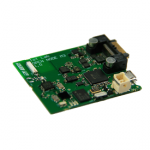

Please join us in welcoming the 198 new nodes now available on the Grenoble site. Dubbed “M3 Nodes”, these are based on the STM32 micro-controller and come with a set of sensors and a radio interface. Compared to the WSN430 nodes, this next generation features a more powerful 32-bits processing, a new ATMEL radio interface … Continue Reading »
M3 Nodes available
